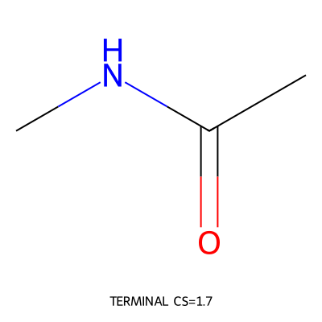

release_smoke_acetamide - Forward Synthesis Planning Report
CNC(C)=O

Steps
0
0
Planned starting materials
1
1
Validation
not recorded
not recorded
Experimental outcomes
none recorded
none recorded
Route Conclusion
Route thesis: Use a direct amide disconnection smoke strategy.
Route mode: late_fgi
Route summary: Offline post-route audit smoke.
Post-route audit summary: status=incomplete; buyability B0/B1/B2=1/0/0; safety S1 substances=0; process-ready/incomplete steps=0/0; incomplete because: substance_safety_lookup_incomplete, offline_mode
Route Overview
Planned Starting Materials
CNC(C)=OTerminal basis: Accepted as a planned starting material. Reason: Small stable material used only for release audit smoke.
Forward Synthesis Steps
Raw Data
Complete planning and audit records are retained in session.json and tree.json.